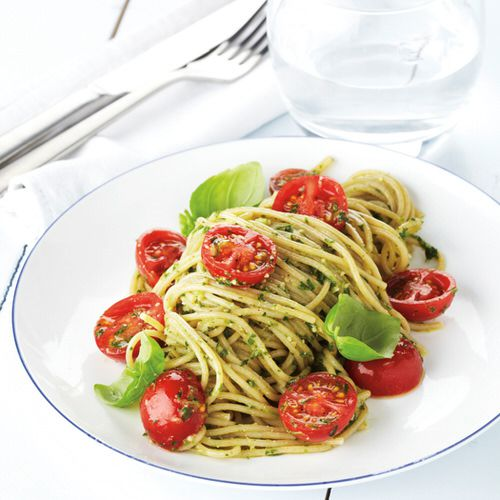

Pasta met kerstomaatjes

Ingrediënten
- 250 g chorizoworst
- 4 eieren
- 1 groene, gele en rode paprika
- 3 lente-uien
- 400 g tomatenblokjes (uit blik)
- Zout en peper
Bereiding
- 1 Snij de chorizo in blokjes, de paprika's in reepjes en de lente-uitjes in ringen.
- 2 Meng de paprika met de tomatenblokjes, de lente-ui en de chorizo. Breng alles op smaak met flink wat peper en eventueel een klein beetje zout.
- 3 Verdeel het mengsel over 4 individuele schaaltjes. Zet ze 3 à 4 minuten in de microgolfoven, op 600 Watt.
- 4 Breek in elk schaaltje 1 ei, prik de dooier door en zet de schaaltjes opnieuw 1 à 2 minuten in de microgolfoven, tot het eiwit gestold is.